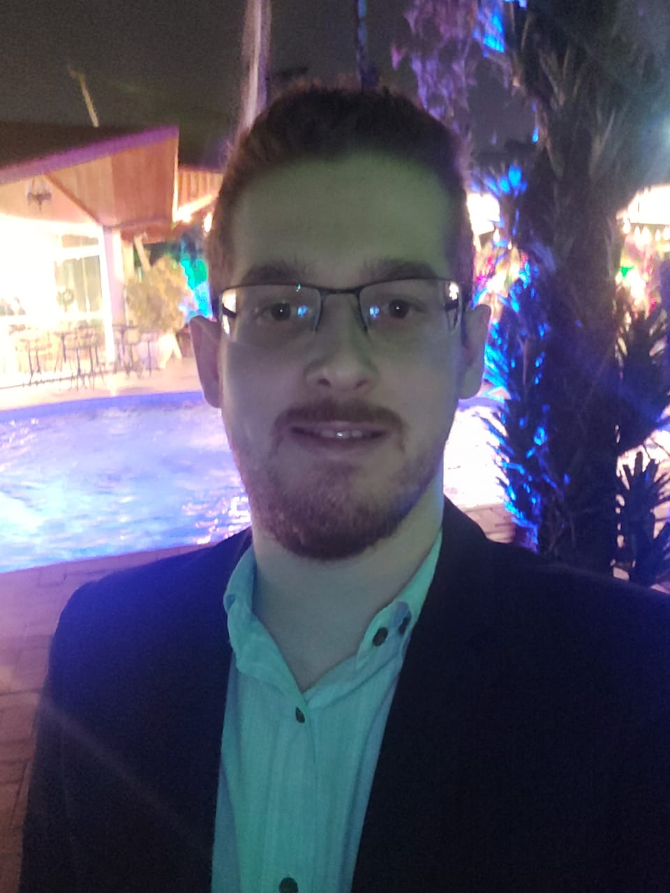

Matheus da Cunha Alves
Desenvolvedor
Contato
- +55 11 97057-3298
- matheus94.ma@gmail.com
- https://github.com/Mat9408
- www.linkedin.com/in/matheus-alves-305b15149
Skills
-
HTML, CSS, Git, GitHub
-
Python
-
SO Windows, Pacote Office
-
Photoshop